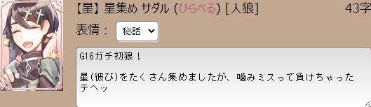
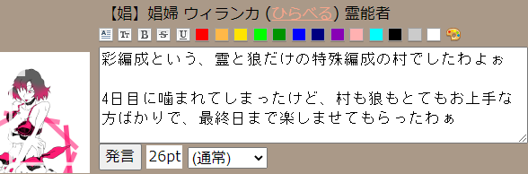
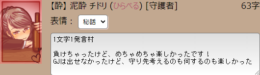
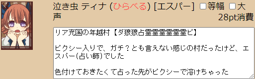

◇ 長期人狼 ◇
長期人狼は人の感情が流れてくるのが感じ取れて、楽しいと思ったんだけど、
それ以上に文章読むのが苦手というか嫌いというか…
それを痛感しています
特にアンカーの多い長文、最後まで読んでるうちに
はじめに言ってたことが分からなくなるんですよね…
アンカー恐怖症に陥ってるので、
圧縮言語が少なそうな村があればお誘い頂けたら嬉しいです
| 織姫と彦星が呟く村【50文字×20回】 | サダル (人狼) | 2021/07/09 |
|
twitter感覚で、と聞いて、これなら私でもできるかも？って参加しました！  |
||
| 南ヘビクイワシの蹴り破る村【彩編成】 | ウィランカ (村人) | 2021/05/01 |
|
GW中にできそうな村があったので、珍しくガチ参戦しました！  |
||
| 【集え！】妄想力VS読解力【1文字村】 | チドリ (守護者) | 2021/02/08 |
|
きいろんさんにお願いして建ててもらった1文字村  |
||
| 年末年始だよ！全員集合！ | ティナ (エスパー) | 2020/12/31 |
|
年末年始を人狼しながら雑談して過ごそうという村でした  |
||
| discord【長期】アナザー人狼【第二回】 | ひらべる (素村) | 2020/12/06 |
|
役職希望制で素村を希望して素村でした。
|
||
| discord【長期】アナザー人狼 | ひらべる (警察) | 2020/10/18 |
|
昔、yahooにあったアナザー人狼の長期版にゃ
|
||
| 【身内】二次会をしよう村【妖入り】 | チェシャ (村人) | 2020/10/11 |
|
二次会だけ、イケメン枠で参加させてもらったにゃ
|
||
| タマシギの刻む村【笛入り】 | ゼノビア (村人) | 2020/09/25 |
|
ログ読みたくない！って思った日がなかった、
|
||
| 初心者がいる村・せぶんす！ | サングニア (村人) | 2020/07/11 |
|
みんなが茸語(アンカーと記号多用で文章として読みにくい)で
|
||
| 【誰歓】隙間時間で遊ぼう村【5文字×3発言】 | 【鳥】アナトラ (村人) | 2020/05/29 |
|
灰で叫びすぎました！かなり言葉悪かった、ゴメンナサイ…
|
||
| 【G編成初歓】縁結びし螺旋の村 | 【獣】ビアンカ (村人) | 2020/02/28 |
|
はじめてのG編成、はじめてのガチ村で800pt。 |
||


Copyright(c)2020-2021 りゅ all rights reserved.